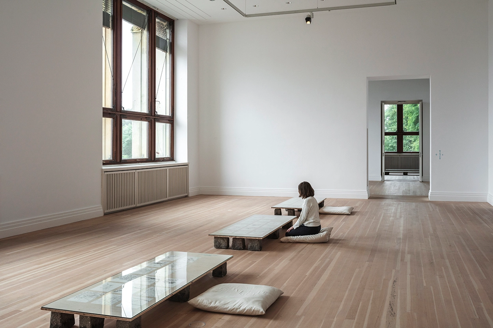

Zheng Bo Gets Intimate—and Political—with Plants
In Zheng Bo’s video Le Sacre du printemps (Tandvärkstallen) (2021–22), naked men gyrate passionately against trees in a verdant forest. They writhe and moan in ecstasy. At midpoint, the camera turns upside down as the men drop to the ground; what was frenzy dissipates into serenity as they lie still, their bodies melting onto the mossy floor. Zheng composed this 16-minute dance and film piece, currently on view at the 59th Venice Biennale, in collaboration with five Nordic dancers. With pines between 60 and 600 years old in a forest in Dalarna, Sweden, the dancers perform what the artist calls “an ecosexual courtship.”
Le Sacre is the latest of Zheng’s works to explore the natural world as pleasurable and erotic. It’s reminiscent of his earlier video series Pteridophilia (2016–ongoing), where in each chapter, different characters engage in a sexual act with pteridophyte (spore-dispersing) plants in a forest in Taiwan. In portraying relations between queer men and ferns—common plants in the subtropical island that are seldom deemed of value—Zheng emphasizes structures of marginalization across species and proposes possibilities of intimacy between them. More graphic than Le Sacre, these videos show close-up shots of men, some of them BDSM performers, stroking their penises with ferns, rubbing their nipples against spiky stems, or ejaculating onto tendrils that then drip with semen.
Pteridophilia is meant to be as explicit as pornography, though the artist sees sexuality less as a spectacle and more as a plain fact of the natural world. “Sex is everywhere in nature,” Zheng coolly tells me in a virtual studio visit. “And interspecies sex is not a human invention.” He offers, as example, how some orchids have evolved to visually imitate bees, which then try to copulate with the flowers. At times, the conceptual deliberations of these eco-sex works have been overshadowed by their shock value. When the Pteridophilia series was presented in 2020 in Japan, where laws prohibit the display of genitals, Zheng and the curators omitted the scenes, leaving instead black screens that emitted moans. The 2018 screenings at Manifesta in Palermo were met with protests. Zheng doesn’t court controversy, though; he’s indifferent to it.
Venice Biennale
Rubbing their nipples against spiky stems:
"He’s indifferent to it."
This is some additional paragraph placeholder content. It has been written to fill the available space and show how a longer snippet of text affects the surrounding content. We'll repeat it often to keep the demonstration flowing, so be on the lookout for this exact same string of text.
Llikewise responds
“Survival Manuals” (2015–ongoing) likewise responds to this leftist heritage. For this series of drawings, Zheng meticulously hand-copies state nature guides, such as “Shanghai’s Wild Edible Plants.” Written by botanists and distributed by the Communist Party in 1961, this guide taught civilians to forage in response to widespread famine during the Great Leap Forward. His act evokes multiple histories of the craft—both the ancient sutra copying and recitation practice of monks, and the practice of clandestinely copying banned books during the Cultural Revolution:
- Zheng meticulously hand-copies
- Shanghai’s Wild Edible Plants
- Third Guide taught
Chinese utopian vision:
- Guide taught
- Famine during
- Scopying and recitation
And this is a definition list:
- Zheng and his generation
- His solo exhibition “Wanwu Council” at the Gropius Bau in Berlin
- Great Unity (Datong)
- The Political Life of Plants (2021) that featured conversations between the artist and scientists over a black-and-white
- Rillig says
- They both gave up certain biosynthesis abilities, in favor
Cultural Revolution
He often takes long ambles around the island, sometimes to scavenge, sometimes to observe Collection of plant drawings.
- BEHIND ZHENG’S VILLAGE, use all topic.
- To italicize, use one shows a fern that kept the artist.
Most of these elements are styled by browsers with few modifications on our part.
Gropius Bau exhibition
Pteridophilia is meant to be as explicit as pornography, though the artist sees sexuality less as a spectacle and more as a plain fact of the natural world. “Sex is everywhere in nature,” Zheng coolly tells me in a virtual studio visit.
6B charcoal pencils
“And interspecies sex is not a human invention.” He offers, as example, how some orchids have evolved to visually imitate bees, which then try to copulate with the flowers.
Example is dangerous.This is some additional paragraph placeholder content. It's a slightly shorter version of the other highly repetitive body text used throughout.
And don't forget about tables in these posts:
| Name | Upvotes | Downvotes |
|---|---|---|
| Alice | 10 | 11 |
| Bob | 4 | 3 |
| Charlie | 7 | 9 |
| Totals | 21 | 23 |
This is some additional paragraph placeholder content. It's a slightly shorter version of the other highly repetitive body text used throughout.